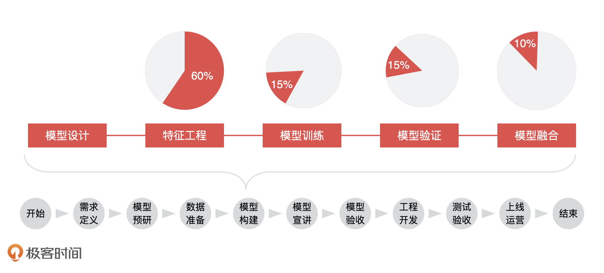
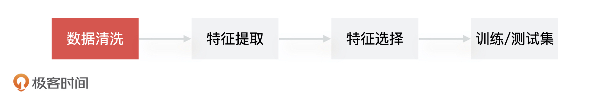
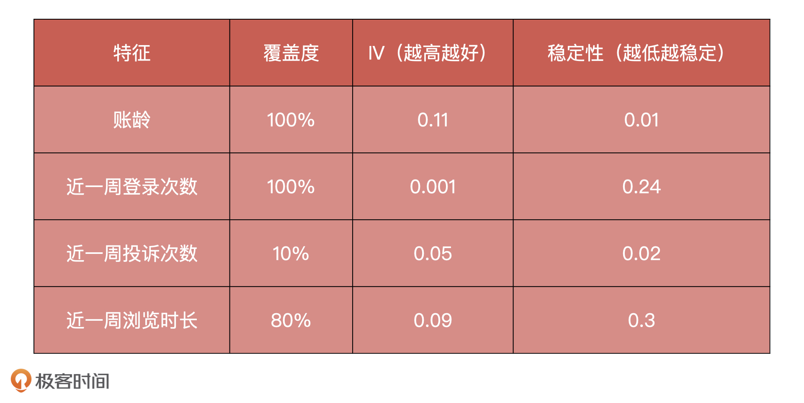
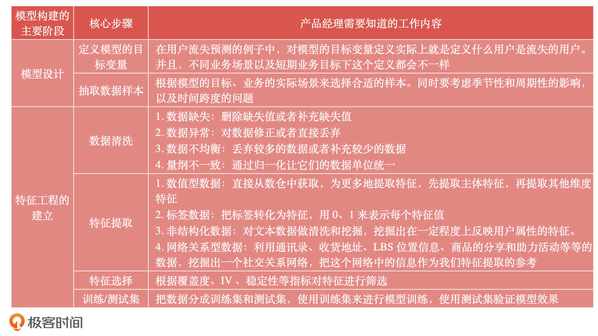

- 00 开篇词 你好，产品经理！你的未来价值壁垒在哪儿？.md.html
- 01 行业视角：产品经理眼中的人工智能.md.html
- 02 个人视角：成为AI产品经理，要先搞定这两个问题.md.html
- 03 技术视角：AI产品经理需要懂的技术全景图.md.html
- 04 过来人讲：成为AI产品经理的两条路径.md.html
- 05 通过一个 AI 产品的落地，掌握产品经理工作全流程.md.html
- 06 AI 模型的构建过程是怎样的？（上）.md.html
- 07 AI模型的构建过程是怎样的（下）.md.html
- 08 算法全景图：AI产品经理必须要懂的算法有哪些？.md.html
- 09 K近邻算法：机器学习入门必学算法.md.html
- 10 线性回归：教你预测，投放多少广告带来的收益最大.md.html
- 11 逻辑回归：如何预测用户是否会购买商品？.md.html
- 12 朴素贝叶斯：让AI告诉你，航班延误险该不该买？.md.html
- 13 决策树与随机森林：如何预测用户会不会违约？.md.html
- 14 支持向量机：怎么预测股票市场的涨与跌？.md.html
- 15 K-means 聚类算法：如何挖掘高价值用户？.md.html
- 16 深度学习：当今最火的机器学习技术，你一定要知道.md.html
- 17 模型评估：从一个失控的项目看优秀的产品经理如何评估AI模型？.md.html
- 18 核心技能：产品经理评估模型需要关注哪些指标？.md.html
- 19 模型性能评估（一）：从信用评分产品看什么是混淆矩阵？.md.html
- 20 模型性能评估（二）：从信用评分产品看什么是KS、AUC？.md.html
- 21 模型性能评估（三）：从股价预测产品看回归算法常用的评估指标.md.html
- 22 模型稳定性评估：如何用PSI来评估信用评分产品的稳定性？.md.html
- 23 模型监控：产品经理如何建设算法模型监控指标体系？.md.html
- 24 推荐类产品（一）：推荐系统产品经理的工作职责与必备技能.md.html
- 25 推荐类产品（二）：从0打造电商个性化推荐系统产品.md.html
- 26 预测类产品（一）：用户复购意向预测的底层逻辑是什么？.md.html
- 27 预测类产品（二）：从0打造一款预测用户复购意向的产品.md.html
- 28 预测类产品（三）：从0打造一款“大白信用评分产品”.md.html
- 29 自然语言处理产品：从0打造一款智能客服产品.md.html
- 30 AI产品经理，你该如何提升自己的价值？.md.html
- 31 AI产品经理面试，这些问题你必须会答！.md.html
- 春节加餐1 用户增长模型：怎么利用AI技术判断新渠道性价比？.md.html
- 春节加餐2 一次答疑，带你回顾模型评估的所有基础概念.md.html
- 期中周测试题 ，你做对了吗？.md.html
- 期中答疑 AI产品经理热门问题答疑合集.md.html
- 结束语 唯一不变的，就是变化本身！.md.html
- 捐赠
06 AI 模型的构建过程是怎样的？（上）
你好，我是海丰。
上节课，我们说 AI 产品经理一定要知道算法模型构建的过程，但这并不意味着，AI 产品经理要参与研发，而是说我们要基于对需求和业务的理解，配合算法同学进行数据集的准备、模型训练、参数调优等等，及时跟进模型的目标优化，针对突发问题做出调整和决策。
当然，了解模型构建这个环节还有另一个好处，那就是当模型构建的进展出现问题，需要延期或者其他资源支持的时候，我们就能按照自己的理解，把算法构建过程中的技术原理以及出现的问题，用非技术语言传达给公司领导和客户，这更容易获得他们的支持和认可。
为了让你更清晰地了解到模型构建环节中算法同学的具体工作，我会结合上节课用户流失预测的例子，用两节课的时间为你讲解一个AI模型构建的过程。模型构建主要包括5个阶段，分别为模型设计、特征工程、模型训练、模型验证、模型融合。今天，我们先讲前2个阶段，下节课，我们再讲其他3个。

模型设计
在模型设计环节，产品经理要考虑的问题就是，在当前业务下，这个模型该不该做，我们有没有能力做这个模型，目标变量应该怎么设置、数据源应该有哪些、数据样本如何获取，是随机抽取还是分层抽样。
不过，对于算法工程师来说，不管你要做的是用户流失预测，还是用户信用评分模型，算法选型上都没有什么不同，都是解决分类问题，通过算法和数据去训练一个模型，然后根据输入得到一个预测结果。
那到底哪里有不同呢？就是模型构建的特征以及模型的目标变量不一样。比如，对于用户流失预测模型，输入是用户登录时间、用户账龄等特征，输出是用户流失的可能性；对于用户信用评分模型，输入是用户年龄、花呗额度等特征，输出则是用户逾期概率。
所以，在模型设计阶段最重要的就是定义模型目标变量（即什么样的用户是流失的用户，什么样的用户是逾期的用户），以及抽取数据样本。
在用户流失预测的例子中，对模型的目标变量定义实际上就是定义什么用户是流失的用户。不同业务场景以及短期业务目标下这个定义都会不一样。最开始，我们这个业务考核的是日活，所以流失用户的定义就是近30天没有登录的用户。后来用户量级稳定了，公司开始考虑盈利问题，我们的流失用户定义就变成了近30天没有成功下单的用户。
要记住，不同的目标变量，决定了这个模型应用的场景，以及能达到的业务预期。
接着，我们再来说说数据样本的抽取。模型是根据我们选择的样本来进行训练的，所以样本的选取决定了模型的最终效果。换句话说，样本是用来做模型的基础。在选取样本的时候，你需要根据模型的目标、业务的实际场景来选择合适的样本。
比如在用户流失预测项目上，如果你选择样本的时候，只选择了今年 6 月份的数据，但是由于受到 618 大促的影响，人们购物行为会比平时多很多，这就会导致此阶段的样本不能很好地表达用户的正常行为。
所以在样本选取上，你必须要考虑季节性和周期性的影响。另外，我们还要考虑时间跨度的问题。一般情况下，我建议你选择近期的数据，并结合跨时间样本的抽取，来降低抽样的样本不能描述总体的这种风险。
总的来说，因为不同的应用场景下模型设计的时间完全不同，所以这个阶段具体的开发时间也很难量化。
特征工程
模型设计完我们就有了目标变量和样本，之后就到了建立特征工程的阶段。我们可以把整个模型的构建理解为：从样本数据中提取可以很好描述数据的特征，再利用它们建立出对未知数据有优秀预测能力的模型。
所以，在模型的构建过程中，特征工程是一个非常重要的部分。而且，对于算法工程师们来说，特征工程的相关工作最具性价比。特征挑选得好，不仅可以直接提高模型的性能，还会降低模型的实现复杂度。
这首先是因为，无论特征和数据过多或过少，都会影响模型的拟合效果，出现过拟合或欠拟合的情况。其次，当选择了优质的特征之后，即使你的模型参数不是最优的，也能得到不错的模型性能，你也就不需要花费大量时间去寻找最优参数了，从而降低了模型实现的复杂度。
说了这么多，其实核心就是一句话：数据和特征决定了机器学习的上限，而模型和算法只是逼近这个上限而已。因此，算法工程师们花费在特征工程建立上面的时间，基本上占整个模型构建的 60%。
那什么是特征工程？对一个模型来说，因为它的输入一定是数量化的信息，也就是用向量、矩阵或者张量的形式表示的信息。所以，当我们想要利用一些字符串或者其他类型的数据时，我们也一定要把它们先转换成数量化的信息。像这种把物体表示成一个向量或矩阵的过程，就叫做特征工程（Feature Engineering）。
那什么是建立特征工程呢？比较常见的，我们可以通过一个人的年龄、学历、工资、信用卡个数等等一系列特征，来表示这个人的信用状况，这就是建立了这个人信用状况的特征工程。同时，我们可以通过这些特征来判断这个人的信用好坏。
更具体点来说，建立特征工程的流程是，先做数据清洗，再做特征提取，之后是特征筛选，最后是生成训练/测试集。
接下来，我就按照这4个步骤，来给你讲讲特征工程的建立。在这个环节，我们要重点关注算法同学处理特征的手段，以及解决常见问题的方法。
1. 数据清洗

这里我要补充一点，在建立特征工程的开始阶段，算法工程师为了更好地理解数据，通常会通过数据可视化（Data Visualization）的方式直观地查看到数据的特性，比如数据的分布是否满足线性的？数据中是否包含异常值？特征是否符合高斯分布等等。然后，才会对数据进行处理，也就是数据清洗，来解决这些数据可能存在的数据缺失、有异常值、数据不均衡、量纲不一致等问题。
其中，数据缺失在数据清洗阶段是最常见的问题。比如说，我们在做用户流失预测模型的时候，需要用到客诉数据。客诉数据有电话和网页两个来源，但是电话客诉数据，并没有记录用户的客诉解决时长，也就是说数据缺失了。当算法同学在处理电话客诉问题解决时长数据的时候，他们就需要对其他用户客诉的数据取平均值，来填充这部分数据。
因此，在遇到数据缺失问题时，算法工程师可以通过删除缺失值或者补充缺失值的手段来解决它。至于数据异常的问题，可以选择的方法就是对数据修正或者直接丢弃，当然如果你的目标就是发现异常情况，那就需要保留异常值并且标注。
对于数据不均衡的问题，因为数据偏差可能导致后面训练的模型过拟合或者欠拟合，所以处理数据偏差问题也是数据清洗阶段需要考虑的。
一般来说，我们需要的都是比较均衡的样本数据，也就是量级差别不大的样本数据。在预测流失用户的项目里面，绝大部分用户都是正常用户，只有极少数用户会是流失用户。这个时候，我们就可以选择是丢弃比较多的数据还是补充比较少的数据了。
最后，针对量纲不一致的问题，也就是同一种数据的单位不同，比如金额这个数据，有的是以万元为单位，有的是以元为单位，我们一般是通过归一化让它们的数据单位统一。
2. 特征提取
在清洗好数据之后，算法工程师就需要对数据进行特征的提取，一般提取出的特征会有4类常见的形式，分别是数值型特征数据、标签或者描述类数据、非结构化数据、网络关系型数据。接下来，我们来看看它们的提取方法。
首先是数值型特征数据。
数据一般包含大量的数值特征。比如，在用户流失预测问题中，它的属性就包括了用户近一年的消费金额、好友人数、在京东浏览页面的次数等信息，这些就是数值型特征数据。
这类特征可以直接从数仓中获取，操作起来非常简单，为了能更多地提取特征。一般来说，会首先提取主体特征，再提取其他维度特征。比如，在京东浏览页面的次数，这就是业务属性相关的主体变量特征，而页面的停留时长，浏览次数排名等数据就是一些度量维度的特征。除此之外，一系列聚合函数也可以去描述特征，比如总次数、平均次数，当前次数比上过去的平均次数等等。
其次是标签或描述类数据。
这类数据的特点是包含的类别相关性比较低，并且不具备大小关系。比如一个用户有房、有车、有子女，那我们就可以对这三个属性分别打标签，再把每个标签作为一个独立的特征。
这类特征的提取方法也非常简单，一般就是将这三个类别转化为特征，让每个特征值用 0、1 来表示，如有房 [0, 1]、有车 [0, 1] 等等。
接着，我们来看非结构化数据（处理文本特征）。
非结构化数据一般存在于 UGC（User Generated Content，用户生成内容）内容数据中。比如我们的用户流失预测模型用到了用户评论内容，而用户评论都是属于非结构化的文本类数据。
这类数据比较繁杂，提取的特征的手段比前两类数据复杂一些。在用户流失预测模型中，我们就是先清洗出用户评论数据，再通过自然语言处理技术，来分析评论是否包含负面信息和情绪，最后再把它作为用户流失的一种维度特征。
另外，在挖掘用户评论的过程中，如果遇到“这个酒店有亲子房，我家孩子很喜欢” 这样的评论，我们还能挖掘出当前用户可能是亲子用户，这也可以作为画像标签。
总的来说，提取非结构化特征的一般做法就是，对文本数据做清洗和挖掘，挖掘出在一定程度上反映用户属性的特征。
最后，我们来看网络关系型数据。
网络关系型数据和前三类数据差别非常大，前三类数据描述的都是个人，而网络关系型数据描述的是这个人和周围人的关系。比如说，在京东购物时，你和一个人在同一收货地址上，如果这个收货地址是家庭地址，那你们很可能就是家人。如果在同一单位地址上，那你们很可能就是同事，这代表着一个关系的连接。
提取这类特征其实就是，根据复杂网络的关系去挖掘任意两人关系之间的强弱，像是家庭关系、同学关系、好友关系等等。具体来说，算法工程师可以利用通讯录、收货地址、LBS 位置信息、商品的分享和助力活动等等的数据，挖掘出一个社交关系网络，这个网络中的信息就能作为我们特征提取的参考了。不过，这是一个很专业的领域，我们现阶段只需要知道一般的提取思路就可以了。
3. 特征选择
在数据特征提取完成之后，就进入特征选择的过程。特征选择简单来说，就是排除掉不重要的特征，留下重要特征，说起来好像很容易，算法工程师具体是怎么做的呢？
一般来说，算法工程师会对希望入模的特征设置对应的覆盖度、IV 等指标，这是特征选择的第一步。然后，再依据这些指标和按照经验定下来的阈值对特征进行筛选。最后，还要看特征的稳定性，将不稳定的特征去掉。
比如说，我们在预测流失用户项目中，筛选出了账龄、最近一周登录次数、投诉次数和浏览时长这几个特征，我把它们对应的覆盖度、IV值、稳定性都统计在了下面的表格中。

在对这些特征进行筛选的时候，我们首先去掉覆盖度过低的投诉次数，因为这个特征覆盖的人群很少，从经验上来讲，如果特征覆盖度小于 50% 的话，我们就不会使用这个特征了。然后去掉 IV 值过低的登录次数，IV 值指的是信息贡献度，表示了特征对这个模型有多少贡献，那简单来说，就是这个特征有多重要。在用户流失项目中，如果 IV 小于 0.001 的话，我们就不会使用这个特征了。最后去掉稳定性过低的浏览时长，剩下的就是我们可以入模型的特征变量了。
4. 训练/测试集
好了，特征选择完了，我们就进入了最后的，生成训练和测试集的阶段。这一步也是模型正式开始训练前需要做的，简单来说，就是算法同学需要把数据分成训练集和测试集，他们会使用训练集来进行模型训练，会使用测试集验证模型效果。至此，算法同学就完成了建立模型的特征工程的工作，然后就会进入后续的模型训练阶段。
小结
这节课，我们主要讲了模型构建中前两个环节，分别是模型设计和特征工程的建立。
作为产品经理，我们一定要重视模型设计阶段，因为我们的 PRD 实际就决定了模型目标变量的定义和数据样本的抽取，它们是模型构建的基础，也是模型设计环节最需要注意的。
建立特征工程这个环节的工作，因为基本可以占到 AI 模型开发时间的 60%，所以它的核心步骤也是我们要知道和了解的。这其中最重要的就是数据清洗和特征提取，因为数据和特征的质量决定了模型最后的效果表现。
为了方便你及时回顾，我把这两个环节的核心步骤以及它们对应的具体工作内容总结在了下面的表格里，你可以看一看。

最后，我还想再啰嗦几句，在机器学习模型训练过程中，由于技术的复杂性和模型效果的不确定性，经常会出现很多计划外的工作和问题。
因此，在 AI 模型构建的过程中，产品经理经常需要给老板和客户解释各种质疑。有时，你需要和算法同学站在一起，说服老板理解问题和投入更多资源，以及当某些预测模型的精准度不是特别高的时候，你还要和客户进行技巧性的沟通，为产品优化争取更多的时间。而这些，都离不开你对 AI 模型构建过程的足够了解。 所以，这两节课虽然看起来简单，但你一定要认真学。
课后讨论
在用户流失预测模型中，如果我们对流失用户的定义是近 30 天内没有下单的用户，那你认为用户样本我们需要考虑哪些特殊因素？
欢迎将你的思考和疑问写在留言区，我们下节课见！
© 2019 - 2023 Liangliang Lee. Powered by gin and hexo-theme-book.